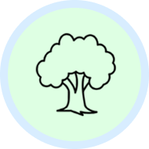
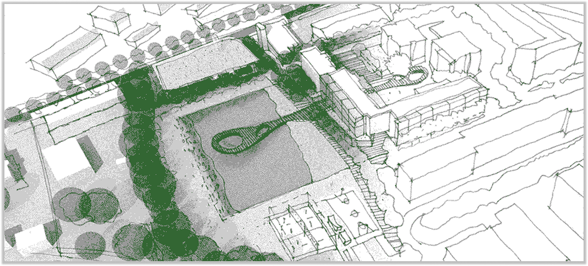
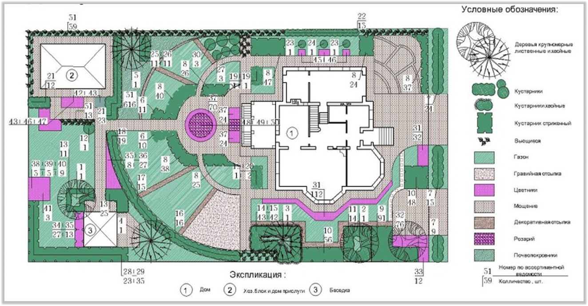
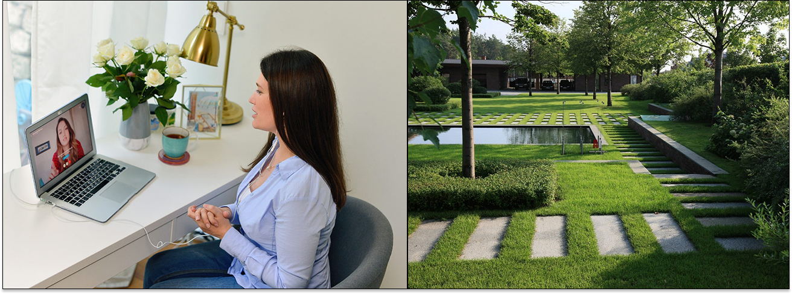
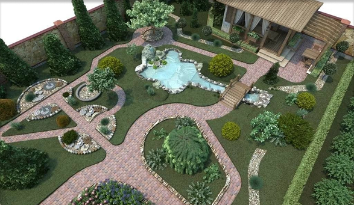
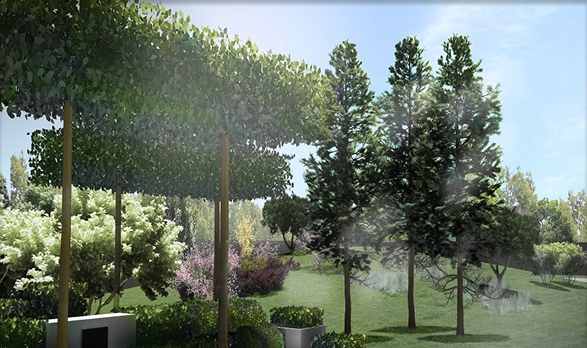
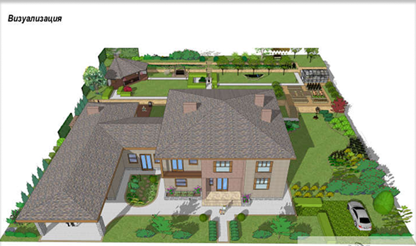
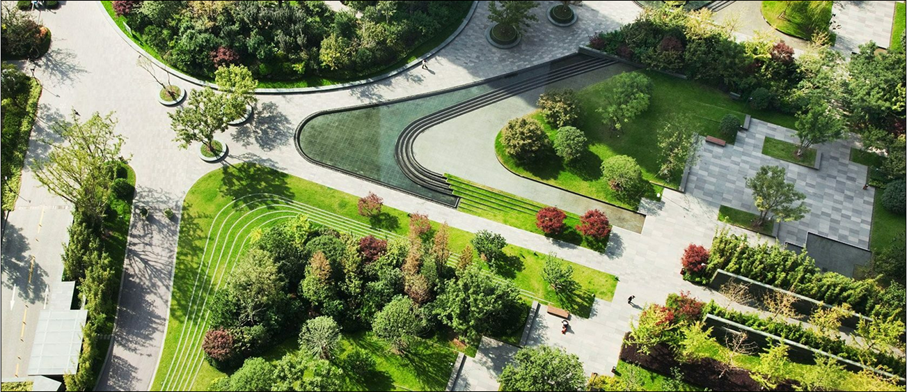

УСЛУГИ
БЛАГОУСТВРОЙСТВО ТЕРРИТОРИИ
Благоустройство территории – комплекс мероприятий, которые направлены на улучшение функционального, санитарного, экологического и эстетического состояния участка. Это очень важно для комфортного проживания.
К основным элементам территории относятся: декоративные и конструктивные устройства,
небольшие архитектурные формы, растительные компоненты.
ВЫПОЛНЕНИЕ РАБОТ ПО БЛАГОУСТРОЙСТВУ ТЕРРИТОРИИ
1. УБОРКА
БЛАГОУСТРОЙСТВО ЗЕМЕЛЬНОГО УЧАСТКА НАШИ СОТРУДНИКИ ОБЫЧНО НАЧИНАЮТ ПОСЛЕ ОКОНЧАНИЯ ОСНОВНЫХ СТРОИТЕЛЬНЫХ РАБОТ. ПЕРВАЯ ЗАДАЧА — ОЧИСТКА ПРОСТРАНСТВА ОТ МУСОРА, НЕЖЕЛАТЕЛЬНЫХ РАСТЕНИЙ, ПНЕЙ, КАМНЕЙ.

2. ЗЕМЕЛЬНЫЕ РАБОТЫ
ЗАТЕМ СПЕЦИАЛИСТЫ ВЫПОЛНЯЮТ ПРЕДВАРИТЕЛЬНОЕ ВЫРАВНИВАНИЕ И ПРИДАЮТ ОБЪЕКТУ РЕЛЬЕФ — СОЗДАЮТ ИСКУССТВЕННЫЕ НАСЫПИ ДЛЯ АЛЬПИЙСКИХ ГОРОК, ПРОИЗВОДЯТ ТЕРРАСИРОВАНИЕ. ПРИ НЕОБХОДИМОСТИ УЧАСТОК ПЕРЕКАПЫВАЮТ, ЗАВОЗЯТ ПОДХОДЯЩИЙ ДЛЯ ВЫБРАННЫХ РАСТЕНИЙ ГРУНТ.
3. БЛАГОУСТВРОЙСТВО
ПОСЛЕ ЭТОГО ВЫПОЛНЯЮТ РАБОТЫ ПО ОБУСТРОЙСТВУ ДРЕНАЖНОЙ СИСТЕМЫ И АВТОМАТИЧЕСКОГО ПОЛИВА, СОЗДАНИЮ ДОРОЖЕК, ПЛОЩАДОК, МОЩЕНИЮ, УСТАНОВКЕ БЕСЕДОК И ДР. КОГДА ВСЕ ИНЖЕНЕРНЫЕ ЗАДАЧИ ПО ПРОЕКТУ БЛАГОУСТРОЙСТВА ТЕРРИТОРИИ РЕШЕНЫ, В СООТВЕТСТВИИ С ДЕНДРОПЛАНОМ САДОВОГО УЧАСТКА ВЫСАЖИВАЮТ РАСТЕНИЯ. СЛЕДУЮЩАЯ СТАДИЯ — ФИНАЛЬНАЯ ПЛАНИРОВКА. ЗАВЕРШАЕТ КОМПЛЕКС УСЛУГ УКЛАДКА ГАЗОНА.
4. УХОД
ПРЕОБРАЗИВШИЙСЯ САД БУДЕТ ДЕСЯТИЛЕТИЯМИ РАДОВАТЬ ХОЗЯЕВ ПРИ ОРГАНИЗАЦИИ ПРАВИЛЬНОГО УХОДА.
РАЗРАБОТКА ЭСКИЗНОГО ПЛАНА
Эскизный проект — это комплект предварительных чертежей и схем здания, который разрабатывается на начальной стадии проектирования. Он используется для предварительной проработки основных проектных решений, создания разных вариантов исполнения объекта.
ОСНОВНЫЕ ЭТАПЫ РАЗРАБОТКИ
- СБОР И АНАЛИЗ ДАННЫХ ОБ ОСОБЕННОСТЯХ ОКРУЖАЮЩЕЙ ЗАСТРОЙКИ.
- ОЦЕНКА РЕЛЬЕФА И ЛАНДШАФТА ТЕРРИТОРИИ, НА КОТОРОЙ ПЛАНИРУЕТСЯ СТРОИТЕЛЬСТВО.
- ВЫБОР ОСНОВНЫХ АРХИТЕКТУРНЫХ, ПЛАНИРОВОЧНЫХ РЕШЕНИЙ, ИДЕЙ ПО ОФОРМЛЕНИЮ ОБЪЕКТА.
- РАЗРАБОТКА КОНЦЕПЦИИ ЗДАНИЯ В ОДНОМ ИЛИ НЕСКОЛЬКИХ ВАРИАНТАХ
- СОСТАВЛЕНИЕ ЭСКИЗНОГО ПРОЕКТА, ВКЛЮЧАЮЩИЙ ГЕНЕРАЛЬНЫЙ ПЛАН ТЕРРИТОРИИ, ЭСКИЗЫ ЗДАНИЯ, ЕГО ОТДЕЛЬНЫХ ЭЛЕМЕНТОВ, КОНСТРУКЦИЙ, ВИЗУАЛИЗАЦИЮ ФАСАДОВ, СХЕМЫ ИНЖЕНЕРНЫХ РЕШЕНИЙ.

ДЕНДРОПЛАН
Дендроплан содержит численные обозначения. Каждому отдельному дереву, кустарнику, газону присваивается число, где числитель — номер, заданный растению в перечетной ведомости, а знаменатель — общее количество посадочного материала. Чертеж содержит данные о: расположении земельного участка (территориальном);
ЧТО УЧИТЫВАЕТСЯ В ДЕНДРОПЛАНЕ
- УСЛОВИЯ РАЗВИТИЯ. РАССМАТРИВАЮТСЯ СОСТАВ ПОЧВ, НЕОБХОДИМЫХ ДЛЯ РАЗВИТИЯ РАСТЕНИЙ, А ТАКЖЕ ТРЕБУЕМЫЕ КЛИМАТИЧЕСКИЕ УСЛОВИЯ. УЧИТЫВАЮТСЯ РЕЛЬЕФ УЧАСТКА И ПОТРЕБНОСТЬ РАСТЕНИЙ В СОЛНЦЕ И ВЛАГЕ. К ПРИМЕРУ, ХВОЙНЫЕ ДЕРЕВЬЯ ЛУЧШЕ ЧУВСТВУЮТ СЕБЯ В ТЕНИ, А ПЛОДОВЫЕ РАСТЕНИЯ ЛЮБЯТ СОЛНЕЧНЫЙ СВЕТ.
- СОЧЕТАЕМОСТЬ С ОБЩИМ ДИЗАЙНОМ ТЕРРИТОРИИ И СТИЛЕМ ПОСТРОЕК. РАСТЕНИЯ ПОМОГУТ СКРЫТЬ НЕДОСТАТКИ УЧАСТКА И ПОДЧЕРКНУТЬ ЕГО САМЫЕ КРАСИВЫЕ МЕСТА. С ИХ ПОМОЩЬЮ, НАПРИМЕР, МОЖНО ЭФФЕКТИВНО ЗАПОЛНИТЬ ПУСТОЕ ПРОСТРАНСТВО.
- СОВМЕСТИМОСТЬ. ОЧЕНЬ ВАЖНО, ЧТОБЫ РАСТЕНИЯМ БЫЛО КОМФОРТНО РАСТИ РЯДОМ ДРУГ С ДРУГОМ. УЧИТЫВАЙТЕ ЭТО И ИЗБЕГАЙТЕ ПОСАДКИ РЯДОМ ДЕРЕВЬЕВ, УГНЕТАЮЩИХ «СОСЕДА».
- СЕЗОННОСТЬ. ВАЖНА ДЛЯ ПОДБОРА ЦВЕТУЩИХ ВИДОВ РАСТЕНИЙ. СОСТАВЛЕНИЕ КЛУМБ, РОЗАРИЕВ И ЦВЕТОЧНЫХ КОМПОЗИЦИЙ ПРОВОДИТСЯ С УЧЕТОМ ПЕРИОДА АКТИВНОГО ЦВЕТЕНИЯ РАСТЕНИЙ.
- ГАРМОНИЧНОСТЬ. РАСТЕНИЯ ДОЛЖНЫ СОЧЕТАТЬСЯ ДРУГ С ДРУГОМ ПО ВИДУ КРОНУ, ВЫСОТЕ.

КОНСУЛЬТАЦИЯ
БЕСПЛАТНО ИНДИВИДУАЛЬНО
КОНСУЛЬТАЦИИ СПЕЦИАЛИСТА
ПО ТЕЛЕФОНУ/В ОФИСЕ ФИРМЫ ДО 1 ЧАСА
ЗАКАЗАТЬ ЗВОНОК:

В КОНСУЛЬТАЦИЮ НА ОБЪЕКТЕ ВХОДИТ:
- ОСМОТР, ЗАМЕР, СЪЕМКА УЧАСТКА
- ЭКСПЕРТНАЯ ОЦЕНКА О СОСТОЯНИИ РАСТЕНИЙ И ГАЗОНА НА УЧАСТКЕ
- РЕКОМЕНДАЦИИ ПО УХОДУ ЗА РАСТЕНИЯМИ С ПЕРЕЧНЕМ НЕОБХОДИМЫХ РАБОТ И СРЕДСТВ ПО УХОДУ
- УСТНАЯ КОНСУЛЬТАЦИЯ ПО ДИЗАЙНУ.
Работа ландшафтного дизайнера начинается с приведения в систему всех креативных пожеланий заказчика. Каждая творческая идея отразится в представленном эскизе. После утверждения концепции будущего сада разрабатывается проект, для каждого конкретного участка свой комплект документов, который зависит от почвенных условий, характера рельефа, освещенности и целого ряда других факторов.

ВИЗУАЛИЗАЦИЯ ЛАНДШАФТА
ВИЗУАЛИЗАЦИЯ ЛАНДШАФТА — ЭТО СОЗДАНИЕ ТРЁХМЕРНОЙ МОДЕЛИ ПРОСТРАНСТВА ДЛЯ ВОПЛОЩЕНИЯ ПРОЕКТА БЛАГОУСТРОЙСТВА ТЕРРИТОРИИ УЧАСТКА.
ТЕХНОЛОГИЯ ПОЗВОЛЯЕТ СОЗДАТЬ РЕАЛИСТИЧНЫЕ 3D МОДЕЛИ ДАЧНОГО УЧАСТКА С ДЕРЕВЬЯМИ, РАСТЕНИЯМИ, ДОРОЖКАМИ, ЗОНАМИ ОТДЫХА И ДАЖЕ ВОДОЁМАМИ.

ЧТО ВКЛЮЧАЕТ ЛАНДШАФТНЫЙ ПРОЕКТ?
- ОБЩУЮ КОНЦЕПЦИЮ;
- ГЕНЕРАЛЬНЫЙ ПЛАН;
- ДЕНДРОПЛАН, В КОТОРОМ ОБОЗНАЧЕНЫ ВСЕ БУДУЩИЕ ПОСАДКИ;
- ПЛАН КОММУНИКАЦИЙ;
- ПЛАН ВОДОЕМОВ, КЛУМБ, ЛУЖАЕК И ДРУГИХ ОБЪЕКТОВ С ТЕХНИЧЕСКИМ ОСНАЩЕНИЕМ;
- ОСВЕЩЕНИЕ.

ВИЗУАЛИЗАЦИЯ МОЖЕТ БЫТЬ ДАНА КАК В ДЕТАЛИЗИРОВАННОЙ ФОРМЕ — В ВИДЕ ПОЛНОГО МОДЕЛИРОВАНИЯ В 3D, ТАК И В УПРОЩЕННОЙ — В ВИДЕ 2D НА ОСНОВАНИИ ФОТОГРАФИЙ СУЩЕСТВУЮЩЕГО ОКРУЖЕНИЯ. В УПРОЩЁННОМ ВАРИАНТЕ В РЕЖИМЕ 2D НА ФОТО НАКЛАДЫВАЮТСЯ ПРЕДПОЛАГАЕМЫЕ ЛАНДШАФТНЫЕ ЭЛЕМЕНТЫ И ОБЪЕКТЫ — САДОВЫЕ ДОРОЖКИ, ПОДПОРНЫЕ СТЕНКИ, БЕСЕДКИ, ДЕКОРАТИВНЫЕ ПРУДЫ И ВОДОЁМЫ, АЛЬПИЙСКИЕ ГОРКИ, ЦВЕТНИКИ И МИКСБОРДЕРЫ, ДЕРЕВЬЯ И КУСТАРНИКИ.

ОЗЕЛЕНЕНИЕ
ОЗЕЛЕНЕНИЕ В РАМКАХ ЛАНДШАФТНОГО ДИЗАЙНА ПРЕДПОЛАГАЕТ РАЗРАБОТКУ ПЛАНА, КОТОРЫЙ УЧИТЫВАЕТ РАЗМЕР УЧАСТКА, ХАРАКТЕРИСТИКИ ПОЧВЫ, СОЗДАННЫЕ РАНЕЕ ЭЛЕМЕНТЫ БЛАГОУСТРОЙСТВА, А ТАКЖЕ МЕСТА ПОСАДКИ ДЕРЕВЬЕВ, КУСТАРНИКОВ, ЦВЕТОВ И ТРАВЫ. ОСНОВНАЯ ЗАДАЧА ОЗЕЛЕНЕНИЯ И БЛАГОУСТРОЙСТВА ТЕРРИТОРИИ — СОЗДАНИЕ КОМФОРТНОГО И ГАРМОНИЧНОГО ОКРУЖЕНИЯ, КОТОРОЕ СОЧЕТАЕТ В СЕБЕ ФУНКЦИОНАЛЬНОСТЬ И ЭСТЕТИЧЕСКУЮ ПРИВЛЕКАТЕЛЬНОСТЬ.
